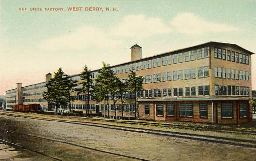
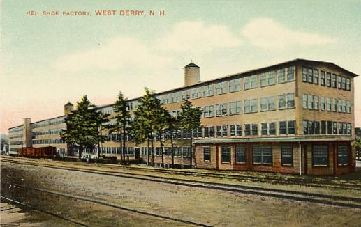

Краткое описание
Дерри в Нью‑Гэмпшире родился из поселения переселенцев XVIII века и вырос в шумный промышленный город. Позже он стал известен всему миру как Spacetown — родина Алана Шепарда, первого американца, вышедшего в космос.

 Derry
Derry
Дерри в Нью‑Гэмпшире родился из поселения переселенцев XVIII века и вырос в шумный промышленный город. Позже он стал известен всему миру как Spacetown — родина Алана Шепарда, первого американца, вышедшего в космос.
Представьте себе начало XVIII века: суровые переселенцы из Шотландии и Северной Ирландии ищут новый дом и основывают маленькое поселение Нутфилд. Со временем оно получает имя Дерри — в память о родных местах. В XIX веке город оживает: шумят текстильные фабрики, пахнет свежим льном и хлопком, а улицы наполняются энергией промышленного роста. Дерри становится не просто точкой на карте, а местом, где труд и упорство превращают деревню в город. XX век приносит Дерри новое лицо. Здесь рождается Алан Шепард — первый американец, вышедший в космос. Благодаря ему город получает прозвище “Spacetown”, и каждый житель гордится тем, что их маленький городок связан с великими космическими открытиями. Сегодня Дерри — это уютный город с богатым прошлым и живым настоящим. Его улицы хранят память о первых поселенцах, о фабричных буднях и о смелости человека, шагнувшего в космос. Это место, где история и современность переплетаются, создавая особую атмосферу.
 
